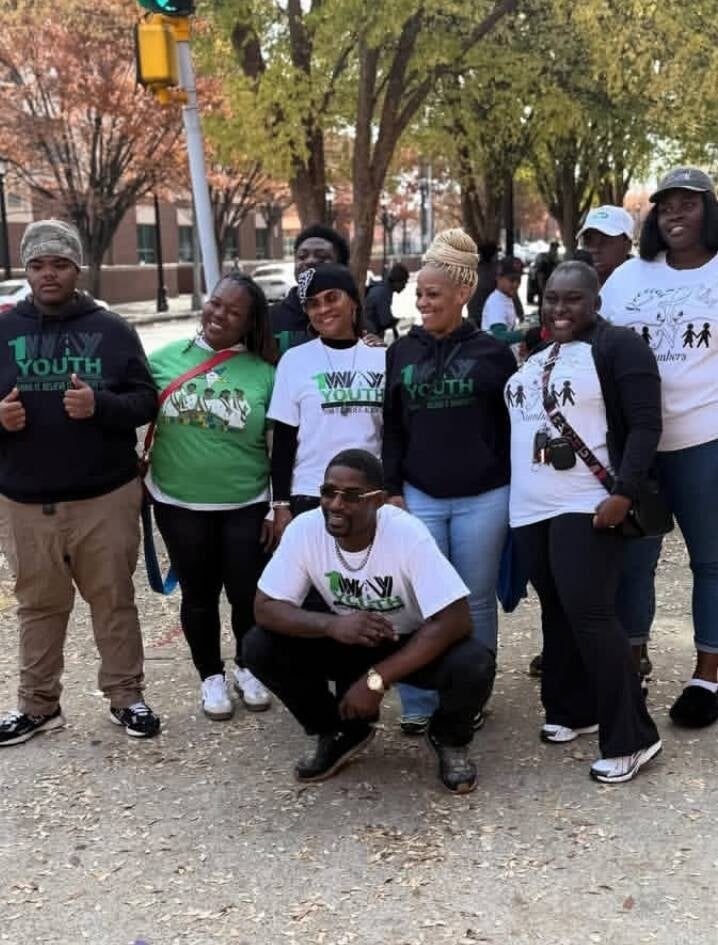
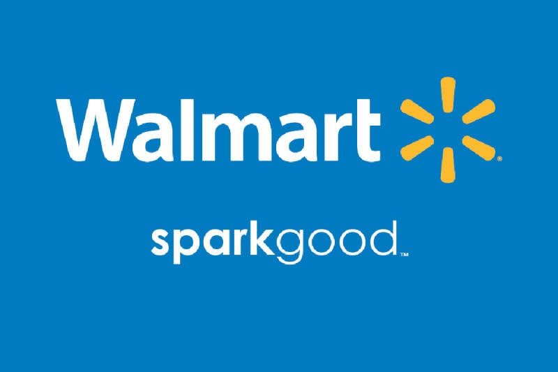
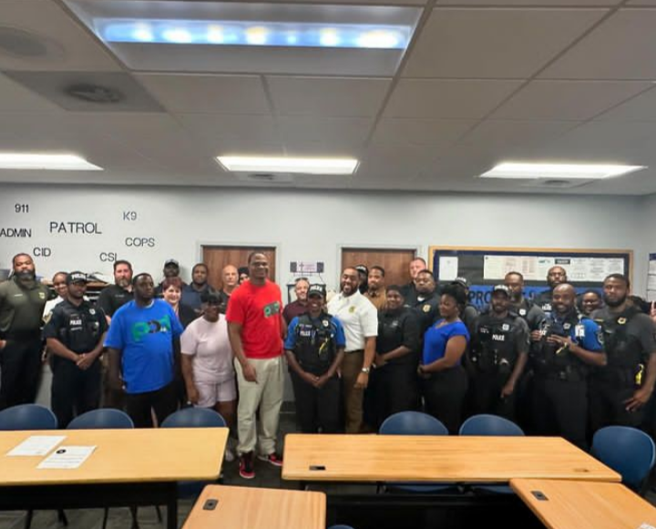

Events
Our events bring activists, leaders, support organizations and families together in a safe, welcoming space: to network, solve problems and build a village that runs on positivity.
Upcoming events are announced on Instagram first: @podmovement23. To bring POD Society to your event, contact us.
-
Midnight Basketball League, 40th anniversary
POD Society was honored in Atlanta for our continued dedication to safer, stronger communities. The work continues. The mission remains. The impact matters.

-
Both Sides of the Gun: Bridging the Divide
Our third annual gun violence prevention event, 2 to 6 PM at Lakewood Church of Hope, 1766 Lakewood Ave., Atlanta. Dialogue, lived-experience testimony, expert panels and community resources, bringing together victims, returning citizens and the wider community.

-
Second Chance Awareness Month
POD Society presented its achievements and impact to the Georgia State Board of Pardons and Paroles, and Executive Director of Public Affairs Octavious Holiday met with the Board on second chance opportunities in reentry and rehabilitation.

-
P.O.W.E.R. Conference 2026 and POD Society Day
Positive Outreach Will Enhance Reentry: a reentry simulation and Post-Incarceration Syndrome (PICS) awareness event at Atlanta City Hall’s Old Council Chambers. The same day, Fulton County proclaimed April 4 Positive Outreach Development Society Day.

-
Youth outreach with 1Way Youth Entrepreneur Center
Mentorship, resources and guidance that help young people build the skills, confidence and mindset to thrive.

-
Walmart Spark Good
Walmart remains a dedicated sponsor of POD Society through its Spark Good grants program. Thank you to Walmart and our volunteers for standing with us as we serve our communities.

-
Forest Park: bridging the gap
With Councilwoman LaTresa Atkins-Wells and Police Chief Brandon Criss, building stronger ties between the community and law enforcement.

-
Community day with the Clayton County Sheriff’s Department
An example of how the community can have healthy interactions with law enforcement. Thank you to Sheriff L. Allen and Sgt. J. Lin.
What we bring to the community
- Networking pop-up shops
- Community service days
- Family reunification events
- Skill-building and resource workshops
- Gun violence prevention and awareness events
Supporting our partners
When partner organizations reach out about their events, POD Society shows up: we collaborate, contribute and engage fully to help every initiative reach its goals. From government to grassroots, POD is the bridge over the gap.